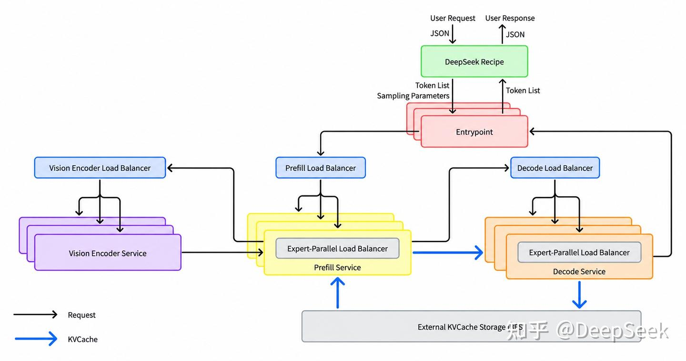

大模型的能力边界由模型本身划定，而如何让这些能力以合理的成本服务海量用户，则是推理框架要解决的核心问题。
A model's capabilities define the boundary of what is possible; how to serve those capabilities to a massive user base at a reasonable cost is the core problem an inference framework must solve.
面对大规模的 AI 调用需求，推理框架已经从单机服务程序演变为跨集群协同的复杂系统。算子、通信、调度与缓存管理相互影响，共同决定端到端性能。对于大规模在线服务，性能优化需要落实到具体的部署条件中：使用什么芯片、如何组织硬件、如何分配计算，以及如何复用已有的计算结果。
Confronted with massive AI serving demand, inference frameworks have evolved from single-machine serving programs into complex systems coordinating across clusters. Operators (kernels), communication, scheduling, and cache management interact and jointly determine end-to-end performance. For large-scale online services, performance optimization must be grounded in concrete deployment conditions: which chips are used, how hardware is organized, how computation is distributed, and how previously computed results are reused.
围绕这些目标，我们持续优化计算、通信、调度与存储，在满足延迟要求的前提下提高系统的有效吞吐，用更少的算力与能源支撑更多请求，让智能服务以更低的价格触达更多用户。
Guided by these goals, we continuously optimize computation, communication, scheduling, and storage to raise the system's effective throughput while meeting latency requirements, serving more requests with less compute and energy so that intelligent services reach more users at a lower price.
此前，我们已开源用于开发高性能算子的 TileLang 以及一系列推理算子库。今天，我们正式开源大规模云服务推理框架 DeepInfer。 基于这一框架，我们已实现 DeepSeek V4.1 Flash 的高吞吐、低延迟大规模推理服务。目前单一集群的服务吞吐是 155 万亿 Tokens/天，整体收入是每卡每小时 38 美金（按谷价）。
Previously we open-sourced TileLang, used for developing high-performance operators, along with a series of inference operator libraries. Today we are officially open-sourcing DeepInfer, our large-scale cloud-service inference framework. Built on this framework, we have achieved the high-throughput, low-latency large-scale inference service of DeepSeek V4.1 Flash. A single cluster currently serves 155 trillion tokens per day, with overall revenue of US$38 per GPU-hour (at off-peak pricing).
DeepInfer 集成了高性能算子和深度优化的推理引擎，支持分布式推理、推测解码、SWA Bounded Replay、结构化输出等能力，可在英伟达与华为昇腾平台上运行。同时，我们还开源了生产级 Token 编解码组件 deepseek-recipe，支持主流大模型 API 协议与模型 Tokens 之间高效、准确的编解码，处理逻辑与 DeepSeek 官方 API 完整对齐，以确保第三方部署能获得与官方部署一致的 API 体验。未来，DeepSeek 新模型的推理代码及后续性能优化也将在 DeepInfer 中持续开源。
DeepInfer integrates high-performance operators and a deeply optimized inference engine, supporting distributed inference, speculative decoding, SWA Bounded Replay, structured outputs, and more, and runs on both NVIDIA and Huawei Ascend platforms. At the same time, we are also open-sourcing deepseek-recipe, a production-grade token encoding/decoding component that performs efficient, accurate encoding and decoding between mainstream LLM API protocols and model tokens. Its processing logic is fully aligned with the official DeepSeek API, ensuring that third-party deployments get an API experience consistent with the official one. Going forward, the inference code for DeepSeek's new models and subsequent performance optimizations will continue to be open-sourced within DeepInfer.
推理系统中的 KVCache 管理与负载均衡组件因与内部基础设施耦合较深，相关代码目前尚未完整开源。本文将从上述设计目标出发，介绍 DeepSeek V4.1 Flash 推理系统的整体架构与关键实现，以及这两部分的设计细节。
The KV cache management and load-balancing components in the inference system are deeply coupled with our internal infrastructure, so the related code is not yet fully open-sourced. Starting from the design goals above, this article introduces the overall architecture and key implementations of the DeepSeek V4.1 Flash inference system, as well as the design details of those two components.
DeepSeek V4.1 Flash 推理系统的优化目标是：更大的吞吐，更低的延迟。 为了实现吞吐和延迟的两个目标，我们使用：
The optimization goals of the DeepSeek V4.1 Flash inference system are: higher throughput and lower latency. To achieve these two goals of throughput and latency, we use:
继承 DeepSeek-V3 / R1 推理系统，ATTN 部分使用数据并行 DP（#DP=#EP），不同的 DP / EP 之间需要进行负载均衡，为此我们开发了 Prefill Load Balancer、Decode Load Balancer、Vision Encoder Load Balancer、Expert-Parallel Load Balancer；为了节省重复 Prefill 的成本，我们开发了 KVCache Storage。
Inheriting from the DeepSeek-V3 / R1 inference system, the ATTN part uses data parallelism DP (#DP = #EP), and load balancing is required across different DP / EP groups. To this end we developed the Prefill Load Balancer, Decode Load Balancer, Vision Encoder Load Balancer, and Expert-Parallel Load Balancer; to save the cost of repeated Prefill, we developed KVCache Storage.
在用户请求进入推理前后，需要进行 API 协议与 token 序列之间的转换，DeepSeek Recipe 支持主流大模型 API 协议与模型 token 序列之间高效、准确的编解码，通过 special token 分段和并行的策略，避免 special token 注入的同时，降低长文本 tokenize 的处理时延。
Before and after a user request enters inference, conversions between API protocols and token sequences are required. DeepSeek Recipe supports efficient, accurate encoding and decoding between mainstream LLM API protocols and model token sequences, and through special-token segmentation and parallelization it both avoids special-token injection and reduces the processing latency of tokenizing long texts.

| 指标 Metric Metric | 线上实测 Online measured Online measured |
|---|---|
| Prefill 每卡吞吐（不含缓存命中） | 60K tps |
| Prefill 每卡吞吐（含缓存命中） | 1.5M tps |
| Prefill 平均输入缓存命中率 | 96% |
| Prefill 首字时延 TTFT（平均） | 400 ms |
| Prefill 首字时延 TTFT（P99） | 1000 ms |
| Prefill 平均输入长度 | 77K tokens |
| Decode 每卡吞吐 | 14K tps |
| Decode 吐字速度 | 230 tps（代码场景 300 tps） |
| KVCache 缓存不活跃后保存时间 | 72 小时 |
官方仓库提供离线基准：以 4 卡 SM100 做 Prefill、64 卡 SM100 做 Decode（各自在一个 scale-up 域内）测得，可用仓库内 run_sweep.sh 复现；评测基准见 eval/README.md。
The official repository provides offline benchmarks: measured with 4 SM100 GPUs for Prefill and 64 SM100 GPUs for Decode (each within one scale-up domain), reproducible via run_sweep.sh in the repo; see eval/README.md for evaluation benchmarks.
DeepSeek Recipe 将 Chat Completions API、Responses API 和 Messages API 的请求转成同一种对话格式，共用模型模板和编码逻辑，按模型版本生成 prompt 和 token 序列。
DeepSeek Recipe converts requests from the Chat Completions API, Responses API, and Messages API into a single conversation format, sharing model templates and encoding logic to generate prompts and token sequences by model version.
模型输出经解析后，形成正文、思考内容和工具调用等事件，再转换为各协议的流式响应。请求转换、prompt 编码和输出解析都由 Rust 实现，以实现高效处理，同时支持 Python 绑定调用，以提升易用性。
After parsing, model outputs are formed into events such as body text, reasoning content, and tool calls, then converted into each protocol's streaming response. Request conversion, prompt encoding, and output parsing are all implemented in Rust for efficient processing, with Python bindings also supported for ease of use.
实践中，Tokenizer 面临两个比较棘手的问题：（1）随着模型上下文变长，线性 tokenize 的方法会引入较大的延时，影响 TTFT，且显著增加了服务的 CPU 开销；（2）special token 用于标记消息角色、思考边界和工具调用等结构，但这些标记也可能作为普通文本出现在对话当中，在处理请求时，需避免用户输入中携带的 special token 文本对模型推理效果产生不良影响。针对这两个问题，我们在 DeepSeek Recipe 中实现了基于 special token 边界匹配的解决方案。
In practice, the Tokenizer faces two thorny problems: (1) as the model context grows longer, the linear tokenization method introduces significant latency, hurting TTFT and substantially increasing the service's CPU overhead; (2) special tokens are used to mark structures such as message roles, reasoning boundaries, and tool calls, but these markers may also appear as ordinary text in a conversation, and when processing requests one must prevent the special-token text carried in user input from adversely affecting model inference. To address both problems, we implemented a solution in DeepSeek Recipe based on special-token boundary matching.
输入编码：构建 prompt 时记录显式插入的 special token 及其位置，编码时直接映射到对应的 token ID，普通文本按基础词表编码。用户输入、工具返回和工具调用参数中的 <｜User｜> 和 <｜image｜> 等字符串会被编码为相应的普通 token 序列，防止通过文本注入控制 token 影响模型行为。
Input encoding: when building the prompt, the explicitly inserted special tokens and their positions are recorded, so at encoding they are mapped directly to the corresponding token IDs, while ordinary text is encoded with the base vocabulary. Strings such as <｜User｜> and <｜image｜> appearing in user input, tool returns, and tool-call arguments are encoded as the corresponding ordinary token sequences, preventing text injection of control tokens from affecting model behavior.
输出解析：在处理响应 token 流时，我们根据 token ID 识别思考结束标记 </think> 和 DSML 标签中的 ｜DSML｜ special token。模型用普通 token 拼出的相同文本会被正确保留为原始内容，不会获得 special token 触发思考结束或工具调用的能力。
Output parsing: when processing the response token stream, we identify the end-of-reasoning marker </think> and the ｜DSML｜ special token inside DSML tags by token ID. Text spelled out by the model using ordinary tokens is correctly preserved as literal content and does not gain the ability to trigger end-of-reasoning or tool calls via special tokens.
分段加速：构建 prompt 时，已经能够确定 special token 的位置和边界。根据 BPE tokenizer 的编码原理，可以发现 special token 之间的各段普通文本可独立编码。因此，我们在编码时首先跳过普通文本当中 special token 的匹配与切分，然后并行地编码各段普通文本，最后再按原顺序拼接结果。这样能降低超长上下文请求的分词耗时，优化请求延迟。
Segmented acceleration: when building the prompt, the positions and boundaries of special tokens are already known. According to the encoding principle of the BPE tokenizer, the ordinary-text segments between special tokens can be encoded independently. Therefore, during encoding we first skip the matching and splitting of special tokens within ordinary text, then encode each ordinary-text segment in parallel, and finally concatenate the results in the original order. This reduces the tokenization time of very-long-context requests and optimizes request latency.
推理后端按 token 粒度返回 chunk，一个 UTF-8 码点、DSML 标签或工具调用参数都可能被拆分到多个 chunk 中。为了正确 decode 模型的输出，并尽早解析出其中的结构以降低返回时延，我们需要实现一套跨 chunk 流式解析的状态机，在内存中保留尚未完成的处理进度和状态，并及时返回已经确定的内容。
The inference backend returns chunks at token granularity, and a single UTF-8 code point, a DSML tag, or a tool-call argument may be split across multiple chunks. To correctly decode the model's output and parse out its structure as early as possible so as to reduce return latency, we need a cross-chunk streaming parsing state machine that retains in memory the in-progress processing state and promptly returns already-determined content.
跨 chunk 解析：解码遇到不完整的 UTF-8 码点时，状态机会先缓冲相关 token，待后续 token 到达、能够补齐状态后，再交给解析器。解析器按思考、正文和工具参数等阶段维护状态，使用 KMP 算法增量地匹配分隔标记。若发现 chunk 末尾只有标记的一部分，就暂时保留匹配进度，在下一个 chunk 到达时继续增量识别；已确定的内容则随解析进度输出，无需反复扫描此前的文本。
Cross-chunk parsing: when decoding encounters an incomplete UTF-8 code point, the state machine first buffers the relevant tokens and only hands them to the parser once later tokens arrive and the state can be completed. The parser maintains state across phases such as reasoning, body, and tool arguments, and uses the KMP algorithm to incrementally match delimiter markers. If a chunk ends with only part of a marker, the match progress is temporarily retained and incremental recognition continues when the next chunk arrives; determined content is emitted as parsing progresses, without repeatedly scanning earlier text.
工具参数转换：工具名解析完成后即可返回，后续根据 DSML 参数边界直接生成 JSON 片段。字符串值逐段做 JSON 转义，数组、对象等非字符串值按原始 JSON 文本输出，无需构造完整参数对象，省去反复解析和序列化的开销。即使参数较长，也可以在生成过程中逐段返回，缩短首个参数片段的等待时间。
Tool-argument conversion: once the tool name is parsed it can be returned immediately, and afterward JSON fragments are generated directly from the DSML argument boundaries. String values are JSON-escaped segment by segment, while non-string values such as arrays and objects are output as their original JSON text, without constructing a complete argument object and thus avoiding repeated parsing and serialization overhead. Even for long arguments, fragments can be returned segment by segment during generation, shortening the wait for the first argument fragment.
数据并行和专家并行都需要尽可能地为每张卡分配均衡的负载，从而降低卡间不同步造成的空转和等待开销。其中 Prefill/Decode Load Balancer 通过请求路由和调度来分别控制 prefill 和 decode 阶段不同卡上注意力子层的负载均衡，Vision Encoder Load Balancer 控制不同 vision encoder 之间的负载均衡，Expert-Parallel Load Balancer 通过冗余专家和动态调整来控制 MoE 子层的负载均衡。
Both data parallelism and expert parallelism need to allocate as balanced a load as possible to each GPU, thereby reducing the idle and waiting overhead caused by inter-GPU desynchronization. Among these, the Prefill/Decode Load Balancer controls the load balancing of the attention sub-layer across different GPUs in the prefill and decode stages through request routing and scheduling; the Vision Encoder Load Balancer controls the load balancing among different vision encoders; and the Expert-Parallel Load Balancer controls the load balancing of the MoE sub-layer through redundant experts and dynamic adjustment.
Prefill Load Balancer 的实现机制可分为 4 层，思路是围绕拟合的注意力子层计算量（记为 compute-quota，是预先拟合的二次代价模型 cost(q, c)，q = 序列中未命中的 token 数，c = 这条序列已经算完的前缀长度）来进行请求的路由和分布调度。
The implementation of the Prefill Load Balancer can be divided into 4 layers; the idea is to perform request routing and distribution scheduling around the fitted compute amount of the attention sub-layer (denoted compute-quota, a pre-fitted quadratic cost model cost(q, c), where q = the number of un-hit tokens in the sequence and c = the prefix length of this sequence that has already been computed).
cost(q, c) predicts how long this step will take, and q is solved from this quadratic equation to take the largest q that exactly satisfies the remaining time budget.Decode Load Balancer 对所有 decode 实例的所有卡进行统一路由，原则是同时均衡请求数和 KVCache 总长度两个维度，前者决定每步批大小，后者决定注意力部分的代价。Decode Load Balancer 启发式地将短请求发给并发较小且 KVCache 总长偏大的卡，长请求发给 KVCache 总长较小的卡，具体可参考 DualPath 的组内调度算法 [1]。
The Decode Load Balancer performs unified routing across all GPUs of all decode instances; the principle is to simultaneously balance two dimensions—request count and total KVCache length—where the former determines the per-step batch size and the latter determines the cost of the attention part. The Decode Load Balancer heuristically sends short requests to GPUs with lower concurrency and larger total KVCache length, and long requests to GPUs with smaller total KVCache length; see the DualPath intra-group scheduling algorithm [1] for details.
对于图片的路由以单台机器为单位，由 prefill 机器随机选中一台部署有卡数个 vision encoder 的机器，在这台机器上，将图片交由当前处理图片 patch 数目（由宽高直接算出，(width/patch_size) × (height/patch_size)）最少的卡的处理生成 embedding。
Image routing is done per machine: a prefill machine randomly selects a machine that has several vision encoders deployed per GPU, and on that machine the image is handed to the GPU currently processing the fewest image patches (computed directly from width and height as (width/patch_size) × (height/patch_size)) to generate the embedding.
专家并行负载均衡的实现方法可概括为：每卡在常驻专家之外多备若干冗余专家，用来放热门专家的副本。通过统计最近 N 步各专家的负载，每 M 步根据统计结果重新分配专家到卡实现动态调整，其中专家权重在 scale-up network 里经 symm_mem 在并行组内转移。
The expert-parallel load-balancing method can be summarized as: each GPU, in addition to its resident experts, keeps several redundant experts to host replicas of hot experts. By counting each expert's load over the most recent N steps, experts are re-assigned to GPUs every M steps based on the statistics, achieving dynamic adjustment; expert weights are transferred within the parallel group over the scale-up network via symm_mem.
Prefill 的策略：每卡 4 个冗余专家起步（向上填充至总专家数为 ep_size 的倍数）；统计窗 100 步，每 1000 步重排，线上数据实测 moe_lb（最慢 rank / 均值）= 1.0320（EP2/DP2）/ 1.0618（EP4/DP4）。
Prefill strategy: start with 4 redundant experts per GPU (rounded up so the total expert count is a multiple of ep_size); a statistics window of 100 steps, re-arranged every 1,000 steps; online measured moe_lb (slowest rank / mean) = 1.0320 (EP2/DP2) / 1.0618 (EP4/DP4).
Decode 的策略：每卡 1 个冗余专家起步（向上填充至总专家数为 ep_size 的倍数），例如 EP64 取整后每卡共 7 个专家（不包括共享专家）；统计窗 1000 步，每 10000 步重排一次，线上数据实测 moe_lb = 1.090。
Decode strategy: start with 1 redundant expert per GPU (rounded up so the total expert count is a multiple of ep_size); for example, at EP64 after rounding each GPU has 7 experts in total (excluding the shared expert); a statistics window of 1,000 steps, re-arranged once every 10,000 steps; online measured moe_lb = 1.090.
PD 分离后两者的资源需求比例随流量动态发生变化，静态配比下的资源错配导致排队和空转的发生，因此需要通过自动扩缩容在集群层面跟随流量调整 Prefill/Decode 实例的比例。
After PD disaggregation, the ratio of the two's resource demands changes dynamically with traffic, and the resource mismatch under a static ratio causes queuing and idle time, so autoscaling is needed at the cluster level to follow traffic and adjust the ratio of Prefill/Decode instances.
实现方式：Prefill 通过统计未命中 token 数判断所需实例数目，decode 通过在计算的请求数判断所需实例数目，调整有限速和上下界。其中，针对大 EP 部署时长尾请求导致资源浪费的问题，decode 实例收到下线通知后进入宽限期（1 min），宽限期结束后仍未完成的请求及其 KVCache 一次性全部转发给其他实例继续 decode 计算。
Implementation: Prefill determines the number of required instances by counting the number of un-hit tokens, and decode by counting the number of in-flight requests, with rate-limited adjustments and upper/lower bounds. Among these, to address the resource-waste problem caused by long-tail requests in large-EP deployments, after a decode instance receives a shutdown notice it enters a grace period (1 min); once the grace period ends, any still-unfinished requests and their KVCache are forwarded all at once to other instances to continue decode computation.
冗余配额：部署时留冗余配额来应对流量变化引发的冲击，包括两方面：一是池子里留有尚未被占用的 ready 机器作为扩容库存；二是永远比算出来的需求多的实例在线，具体来说，配额占用率高于 0.8 时禁止缩容。
Redundant quota: a redundant quota is reserved at deployment to absorb shocks from traffic changes, in two aspects: first, ready machines not yet occupied are kept in the pool as scale-out inventory; second, more instances are kept online than the computed demand—concretely, scale-in is forbidden when quota utilization exceeds 0.8.
容错机制：错误重启在分钟量级，容错依赖配额冗余 + 请求级重新路由的组合机制，而不是靠缩短实例重启时间。大 EP 部署下，一个实例的全部卡构成单一通信域，任意一张卡故障即导致整个实例不可用。重启时为了把该实例其余健康的卡继续用起来，平台按当前健康的所有卡重新确定 EP 大小，实例以实际拿到的卡数作为 EP 规模。
Fault-tolerance mechanism: error restarts are on the order of minutes; fault tolerance relies on a combined mechanism of quota redundancy + request-level re-routing, rather than on shortening instance restart time. In large-EP deployments, all GPUs of an instance form a single communication domain, so a single failed GPU makes the entire instance unusable. On restart, in order to keep the instance's remaining healthy GPUs in service, the platform re-determines the EP size from all currently healthy GPUs, and the instance takes the number of GPUs it actually receives as its EP size.
随着对话上下文的增长和 agent 的广泛使用，KVCache 前缀缓存复用能够极大减少 prefill 重算，从而显著降低成本。DeepSeek-V4.1-Flash 模型的 KVCache 存储分为两个部分：Block KVCache 和 State KVCache，分别存储于 3FS 集群和本机内存中。
As conversation context grows and agents become widely used, KVCache prefix-cache reuse can greatly reduce prefill recomputation and thus significantly cut costs. The KVCache storage of the DeepSeek-V4.1-Flash model is divided into two parts: Block KVCache and State KVCache, stored in the 3FS cluster and local host memory respectively.
Block KVCache：以 128 tokens 为一个 block 进行分页式管理，根据模型架构设计，存储 4 层的 main KV 和 indexer K。
Block KVCache: managed in a paged manner with 128 tokens per block; according to the model architecture, it stores the main KV and indexer K of 4 layers.
SWA KVCache：前 20 层各一个 134 token 的 ring（窗口长度=128 + 投机回退=6），不存储压缩中间态。
SWA KVCache: for the first 20 layers there is one 134-token ring each (window length = 128 + speculative backtrack = 6); compressed intermediate states are not stored.
| 内容 Content Content | 介质 Medium Medium | 副本 Replication Replication | 管理方 Managed by Managed by |
|---|---|---|---|
| 在途 Block KVCache + State KVCache | 推理卡显存 | — | Prefill / Decode 实例 |
| SWA KVCache | Prefill / Decode 机器内存 | 单副本；3FS 上无 | Prefill / Decode 实例；跨机命中经 400G VLAN 拉取 |
| 分页 Block KVCache | 独立 3FS 存储集群 | 应用层无副本；依赖 3FS 自身冗余 | kvcache-store |
Block KVCache 落盘于独立的 3FS 存储集群，不使用本机内存存储。相比多级存储系统，独立的存储集群使得所有 prefill 机器能命中任何前缀，避免前缀亲和和负载均衡路由策略冲突，也使得存储和计算节点自动扩缩容解耦、KVCache 缓存不受计算节点故障的影响（计算节点故障率比存储高数量级以上）。KVCache 系统设计考虑两方面因素：扩大存储容量来提升命中率，提升带宽来降低读取延时。
Block KVCache is persisted to a dedicated 3FS storage cluster and does not use local host memory for storage. Compared with a tiered storage system, a dedicated storage cluster lets all prefill machines hit any prefix, avoiding conflicts between prefix affinity and the load-balancing routing policy; it also decouples the autoscaling of storage and compute nodes and keeps the KVCache unaffected by compute-node failures (compute-node failure rate is more than an order of magnitude higher than storage). The KVCache system design considers two factors: expanding storage capacity to raise the hit rate, and increasing bandwidth to reduce read latency.
容量方面，3FS 分布式文件系统为 KVCache 提供约 100 PiB 的 SSD 存储，agent 流量 KVCache 的 TTL（Time-To-Live）达到 3 天，chatbot 流量达到 7 天。对于 chatbot，其长尾命中更严重，少量 KVCache 会极多次读取，缺失后对整体命中率损失较大。根据经验，3 天左右的 TTL 会造成 chatbot 流量的 KVCache 命中率下降 0.5%-1%；带宽方面，3FS 存储集群针对 KVCache block 粒度（约 112 KiB）的随机读写进行优化，峰值聚合读带宽达到 10 TiB/s，峰值聚合写带宽约 850 GiB/s。
In terms of capacity, the 3FS distributed file system provides about 100 PiB of SSD storage for KVCache, with a TTL (Time-To-Live) of 3 days for agent traffic and 7 days for chatbot traffic. For chatbot, its long-tail hits are more severe—a small amount of KVCache is read extremely many times, and after a miss the loss to the overall hit rate is larger. Empirically, a TTL of around 3 days causes the chatbot traffic's KVCache hit rate to drop by 0.5%–1%; in terms of bandwidth, the 3FS storage cluster is optimized for random reads/writes at the KVCache block granularity (about 112 KiB), with a peak aggregate read bandwidth of 10 TiB/s and a peak aggregate write bandwidth of about 850 GiB/s.
推理框架层面，Block KVCache 由 decode 实例落盘存储，使得 prefill 和 decode 输出均被复用。对于 KVCache 命中开销，命中路径分为三段，只有第一段在关键路径上：匹配由 Entrypoint 在本机 CHECK 角色的 kvcache-store 上做哈希链前缀匹配，只查元数据，但命中长度需在路由前进行计算，无法掩盖；取 KV 在独立进程里异步做，把 KVCache 从 3FS 搬进宿主机 shm；换入从 shm 到 HBM 在 engine 进程内的线程里做，目标是实现逐层 H2D（Host-to-Device）传输与前向计算重叠，由于 CUDA copy engine 对于 KVCache Block 细粒度的拷贝性能不佳，换入使用 GDR 实现，用 RDMA 网卡就能打满 PCIe 带宽，并且不占 SM。
At the inference-framework level, Block KVCache is persisted to storage by decode instances, so that both prefill and decode outputs are reused. Regarding KVCache hit overhead, the hit path is divided into three segments, with only the first on the critical path: Matching is a hash-chain prefix match over metadata performed by the Entrypoint on the local kvcache-store in the CHECK role—it only queries metadata, but the hit length must be computed before routing and cannot be hidden; Fetching KV is done asynchronously in a separate process, moving the KVCache from 3FS into the host's shm; Swap-in from shm to HBM runs in a thread inside the engine process, aiming to overlap per-layer H2D (Host-to-Device) transfers with forward computation. Because the CUDA copy engine performs poorly on fine-grained copies of KVCache blocks, swap-in is implemented with GDR, so an RDMA NIC can saturate PCIe bandwidth without consuming SMs.
SWA KV 不进持久化缓存，而是留在产生它的那台机器的内存里，由一个逻辑上统一、实际按 key 分开存放在各台 Entrypoint 上的内存目录记录在哪台机器，命中时本机没有就跨机取回。由于 SWA KV 只在会话内的分钟级窗口里被复用，池子总容量虽小但周转快，足以覆盖同时活跃的会话，线上数据显示，其 TTL 约 180 秒，命中率在 98% 以上。被驱逐造成的未命中由上述的 Encoder SWA Bounded Replay 重算。
SWA KV does not enter the persistent cache; instead it stays in the memory of the machine that produced it, with an in-memory directory—logically unified but physically partitioned by key across the Entrypoints—recording which machine holds it; on a hit, if the local machine does not have it, it is fetched across machines. Because SWA KV is only reused within a minute-level window inside a session, the pool's total capacity is small but turns over fast, enough to cover simultaneously active sessions; online data shows its TTL is about 180 seconds and its hit rate is above 98%. Misses caused by eviction are recomputed by the Encoder SWA Bounded Replay described above.
SWA KVCache 只在 128 tokens 的整数倍位置上存储。Prefill 阶段结束后存储：位置取序列末尾留出一个 token 后向下对齐到 128 所得的位置，不足一个 128 tokens 则本轮不存储；chunked prefill 中途不存储，只有最后一个 chunk 才存储。Decode 阶段在显存中另开一块副本区，每跨过一个 128 tokens 边界就把该请求当前的窗口在显存内拷入副本区，请求结束时从副本区中最近一次完成拷贝的位置存储，附着点向下对齐到 128 边界，拷贝位置最多越过边界 5 个 token，由 ring 比窗口多出的 6 个位置吸收。
SWA KVCache is stored only at positions that are integer multiples of 128 tokens. Storage after the Prefill stage: the position is obtained by leaving one token at the end of the sequence and rounding down to a multiple of 128; if less than one full 128-token unit remains, nothing is stored this round; during chunked prefill there is no storage mid-way—only the last chunk is stored. In the Decode stage a separate replica region is opened in VRAM, and every time a request crosses a 128-token boundary its current window is copied into the replica region in VRAM; when the request ends, storage is taken from the most recently completed copy in the replica region, with the attachment point rounded down to a 128 boundary; the copy position can overshoot the boundary by at most 5 tokens, absorbed by the 6 extra positions the ring has beyond the window.
命中的原则是：命中长度由 Block KVCache 决定，最后一个 block 是否需要重算由 SWA KVCache 决定，若 SWA KVCache 未命中，就退一块重算。具体地，根据 YOCO 截断要求，对于输入长度 L，最大的命中长度最多为 L - 134（窗口 128 + 投机回退 6）。在这个上限下，首先查询 Block KVCache 命中情况，假设命中长度为 L1（L1 为 block size=128 的整数倍），再查询 SWA KVCache 命中情况。假如在 L1 - 128 至 L1 长度范围内，存在 SWA KVCache 则命中长度为 L1，否则命中长度为 L1 - 128，其中 128 为重算窗口。
The hit principle is: the hit length is determined by Block KVCache, and whether the last block needs recomputation is determined by SWA KVCache; if SWA KVCache misses, fall back by one block and recompute. Concretely, under the YOCO truncation requirement, for an input length L the maximum hit length is at most L − 134 (window 128 + speculative backtrack 6). Under this upper bound, first query the Block KVCache hit situation, assuming a hit length of L1 (L1 is an integer multiple of block size = 128), then query the SWA KVCache hit situation. If within the length range L1 − 128 to L1 there exists an SWA KVCache, the hit length is L1; otherwise it is L1 − 128, where 128 is the recomputation window.
SWA KVCache 不进行持久化存储，缺失时以重算恢复，这是 V4.1 相对 V4 在 KVCache 管理上的主要变化，具体可参考 V4.1 技术报告 [2]。V4 的做法是落盘加精确重算：SWA KVCache 在两个位置写入持久化存储，未命中时重算「层数 × 窗口」个 token 做完整前向，逐层精确恢复窗口状态。这条路径代价很高，必须用足够大的 SSD 容量把未命中率压到极低，代价是 SWA KVCache 占去持久 KVCache 近一半容量，且未能带来相应的命中收益：Block KVCache 呈长尾复用，一段前缀可在数天内被反复命中；SWA KVCache 只在活跃会话内被分钟级复用，会话结束或进入下一轮即失效。以数天留存的 SSD 容量承载分钟级生命期的数据，在多轮短对话场景下尤其不划算。因此，V4 技术报告提出的 Zero SWA Caching（即完全不落盘、仅依赖精确重算）因其代价在生产部署中过高，在 V4.1 推理系统中未实际采用。
SWA KVCache is not persistently stored; when missing it is recovered by recomputation. This is the main change in KVCache management of V4.1 relative to V4; see the V4.1 technical report [2] for details. V4's approach was disk persistence plus exact recomputation: SWA KVCache was written to persistent storage at two positions, and on a miss it recomputed "layer count × window" tokens for a full forward pass, layer by layer exactly restoring the window state. This path is very costly—it required a large enough SSD capacity to push the miss rate extremely low, at the cost of SWA KVCache occupying nearly half of the persistent KVCache capacity without bringing corresponding hit benefits: Block KVCache shows long-tail reuse, where a prefix can be repeatedly hit over several days; SWA KVCache is only reused within active sessions at minute granularity and becomes invalid when a session ends or the next round begins. Using SSD capacity retained for days to hold data with a minute-level lifetime is especially uneconomical in multi-turn short-dialogue scenarios. Therefore, the Zero SWA Caching proposed in the V4 technical report (i.e., no disk persistence at all, relying only on exact recomputation) was not actually adopted in the V4.1 inference system because its cost is too high for production deployment.
V4.1 推理系统采用 SWA Bounded Replay，只重算最近 128 个 token，并把注意力窗口截断在重算段内：从位置 s 起回放，位置 i 的 query 只和 max(s, i − 127) 到 i 区间的 key 计算，重算得到近似的 SWA KVCache。重算代价由此降为与上下文长度和层数无关的常数。该机制用在两处：
The V4.1 inference system adopts SWA Bounded Replay, recomputing only the most recent 128 tokens and truncating the attention window within the replayed segment: replaying from position s, the query at position i is computed only against keys in the range max(s, i − 127) to i, yielding an approximate SWA KVCache through recomputation. The recomputation cost is thereby reduced to a constant independent of context length and layer count. This mechanism is used in two places:
DSpark 是 DeepSeek 提出的投机解码算法框架，相比 DFlash 在输出的 base logits 上叠加只依赖前一 token id 的低秩 logit bias，用极轻量的串行修正补回相邻 token 的局部条件化信息，提升 draft 准确率，具体可参考 DSpark 论文 [4]。
DSpark is a speculative-decoding algorithm framework proposed by DeepSeek. Compared with DFlash, it adds a low-rank logit bias that depends only on the previous token id on top of the output base logits, using extremely lightweight serial correction to recover the local conditioning information of adjacent tokens and improve draft accuracy; see the DSpark paper [4] for details.
在推理系统层面，DSpark 采用变长验证。由于不同请求、不同位置的 draft-token 接受概率不同，固定长度验证会浪费验证算力在低概率 token 上。DSpark 通过 Confidence Head 预测每个 draft token 的接受率，调度时把验证算力分配给边际收益最高的 token。线上部署时，draft 一次生成 5 个 token，根据 profile 出来的硬件吞吐曲线和每个请求的每个 draft-token 的接受率，把各 draft-token 按预期接受率排序，选取有效吞吐最大的前缀子集进行验证。经过对比，相比于固定验证 5 个 token，变长验证在线上部署场景吞吐提升 6%。
At the inference-system level, DSpark uses variable-length verification. Because the acceptance probability of draft tokens differs across requests and positions, fixed-length verification wastes verification compute on low-probability tokens. DSpark predicts each draft token's acceptance rate via a Confidence Head and, when scheduling, allocates verification compute to the tokens with the highest marginal benefit. In online deployment, the draft generates 5 tokens at a time; based on the profiled hardware throughput curve and each request's per-draft-token acceptance rate, the draft tokens are sorted by expected acceptance rate and the prefix subset that maximizes effective throughput is selected for verification. Compared with fixed verification of 5 tokens, variable-length verification improves throughput by 6% in the online deployment scenario.
与 Asynchronous Scheduling 的配合：schedule(N+1) 执行时第 N 步的 confidence 尚未回传，因此 CPU 调度时只确定总预算，逐请求长度在 GPU 上由一个 tilelang kernel 重算（累乘、全局排序取 top-k，并融合 remap scatter），结果回写 pinned buffer。
Interaction with Asynchronous Scheduling: when schedule(N+1) executes, the confidence of step N has not yet returned, so the CPU scheduler only determines the total budget; the per-request lengths are recomputed on the GPU by a TileLang kernel (cumulative product, global sort for top-k, fused with remap scatter), and the result is written back to a pinned buffer.
Decode 第 N 步流程为：schedule(N) → forward(N) → sample(N) → post-process(N)，其中 schedule 和 post-process 是纯 CPU 逻辑，在 post-process(N) 之前，需要 GPU-CPU 同步拿到 sample(N) 的结果。这就导致 post-process(N) 和 schedule(N+1) 的时候，GPU 是空闲的状态。
Decode step N proceeds as: schedule(N) → forward(N) → sample(N) → post-process(N), where schedule and post-process are pure CPU logic, and before post-process(N) a GPU-CPU synchronization is needed to obtain the result of sample(N). This causes the GPU to sit idle during post-process(N) and schedule(N+1).
参考已有实现 [5][6]，我们通过 GPU 和 CPU 之间的异步调度，将流水线重叠：GPU 执行 forward(N) → sample(N) 时，CPU 同步执行 schedule(N+1) → launch_forward(N+1) → post-process(N-1) → launch_sample(N+1)，GPU 全程无空闲。
Following existing implementations [5][6], we overlap the pipeline through asynchronous scheduling between GPU and CPU: while the GPU executes forward(N) → sample(N), the CPU concurrently executes schedule(N+1) → launch_forward(N+1) → post-process(N−1) → launch_sample(N+1), leaving the GPU with no idle time throughout.
结构化输出（Structured Output, SO）用于约束模型输出严格符合指定格式（JSON schema、正则表达式、EBNF 等）。
Structured Output (SO) is used to constrain model output to strictly conform to a specified format (JSON schema, regular expression, EBNF, etc.).
以下为原知乎技术报告文末引用的参考文献（原文以 [1]–[6] 标注于正文）。
The following are the references cited at the end of the original Zhihu technical report (marked [1]–[6] in the body).